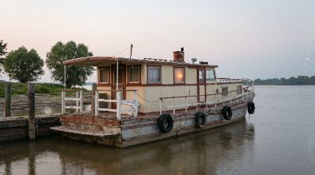
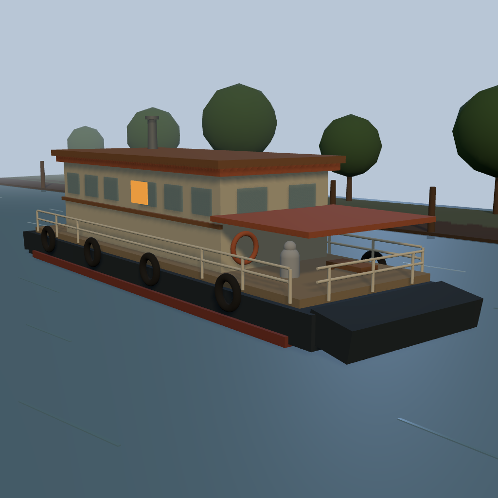
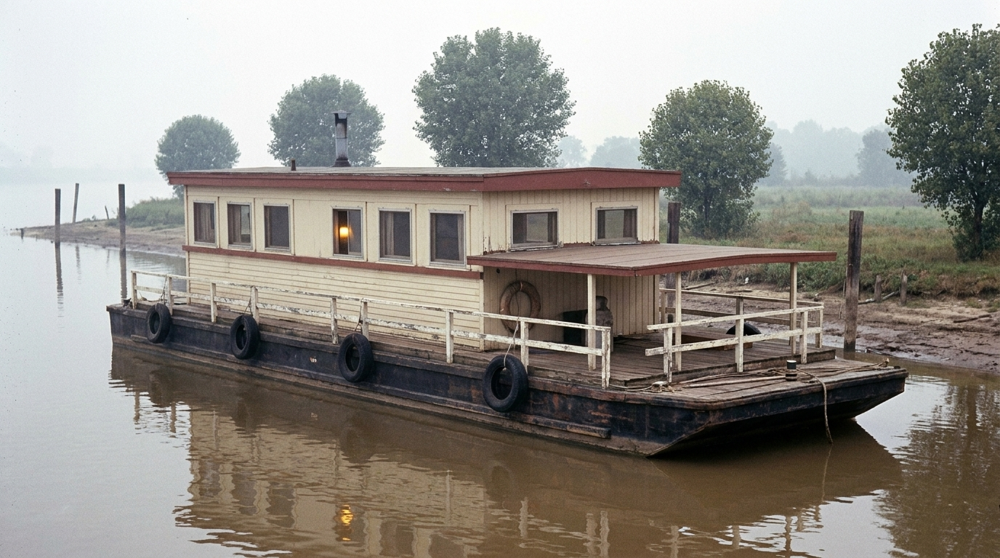

After wiring read-only account access, I inspected the authenticated FlowBoard project behind this demo: 1960s Mississippi Houseboat. What makes it useful as a product story is not just the final image. The dashboard project itself shows the full chain: a Scene capture, a reference-driven output path, a page-layout step for comparing images, and a later edit pass that pushes the environment toward a more convincing photographic result. That makes the post stronger because it is grounded in the actual FlowBoard graph, not just exported artifacts sitting on disk.

A Scene node can lock composition before style exists
One of the most useful things about FlowBoard is that it lets an image start as structure instead of style. In this Houseboat demo, the first important artifact is a quick 3D staging scene rather than a polished render. The graph uses a Scene node capture to preserve the boat silhouette, the low riverbank, the spacing of the mooring posts, and the camera angle that makes the subject readable at a glance.
The captured frame is visibly simple and low-poly, which is exactly why it works. It settles proportion, horizon line, camera height, and left-to-right layout before the image model is asked to improvise texture or atmosphere. In product terms, the Scene node acts like a composition contract.

The graph turns that structure into a photographic prompt
The project graph contains the nodes you would want for this kind of handoff: Style, Time Period, Setting, Shot, Action, Parameters, Negative, and Output. The copy is direct and productively constrained. The style asks for a vintage late-1960s documentary photo. The time-period node anchors the scene to the Mississippi River in the 1960s. The action prompt preserves the barge base, windows, canopy, tires, smokestack, and warm interior light. The negative prompt explicitly rules out modern yacht features, warped geometry, UI chrome, and illustration drift.
That is the useful FlowBoard move here: the graph does not merely say "make a houseboat." It carries forward the upstream spatial decisions while giving the renderer a precise medium and era to translate into.

The dashboard also shows iteration inside the same workflow
The part I especially wanted from the live project is the evidence of iteration. This dashboard copy of the graph includes a Page node configured as a three-up layout to compare images, plus an Edit node whose refinement text is simply: make the trees more organic and chaotic. That edit produces a later render with a livelier shoreline and less schematic foliage while keeping the boat, camera angle, and overall composition intact.
That is a better FlowBoard product story than a generic before-and-after. It shows that once the scene is staged, the graph can keep reusing the same composition while making targeted aesthetic changes. You are not restarting from zero each time.
Why this matters
Plenty of image tools can produce a nice result from a prompt. What FlowBoard demonstrates here is a more durable workflow: stage the scene, capture the frame, define the era and material language, render, compare, refine, and keep the graph readable. The authenticated dashboard project for this demo is compact—just 17 nodes—but it already shows the pattern that makes the product interesting: structure first, medium second, iteration without losing the shot.
This is the kind of project that makes the standalone FlowBoard blog work. It is visual, grounded in a real graph, and legible even to someone who has never opened the editor before.